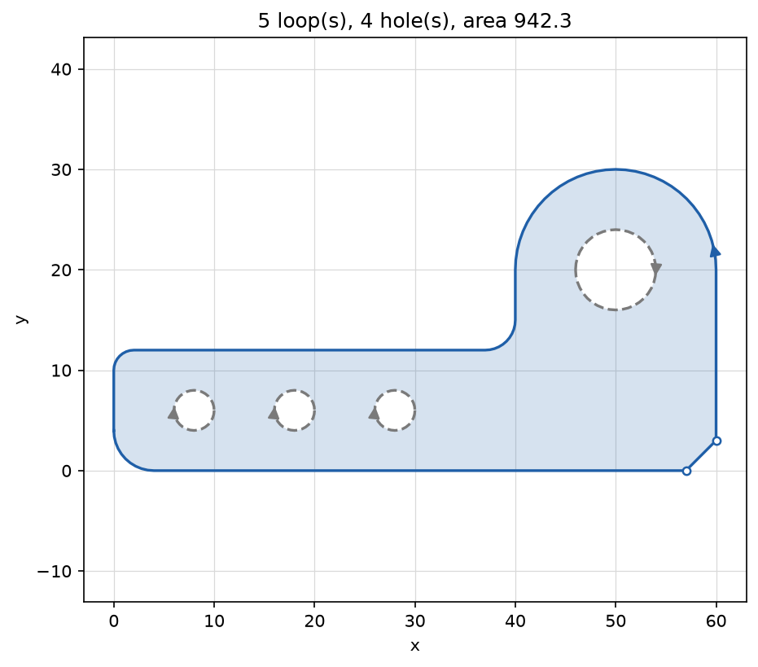
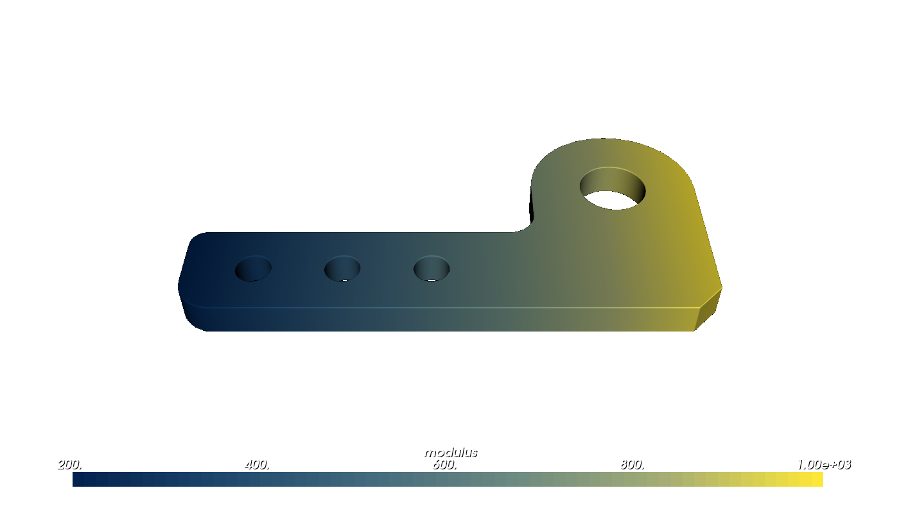
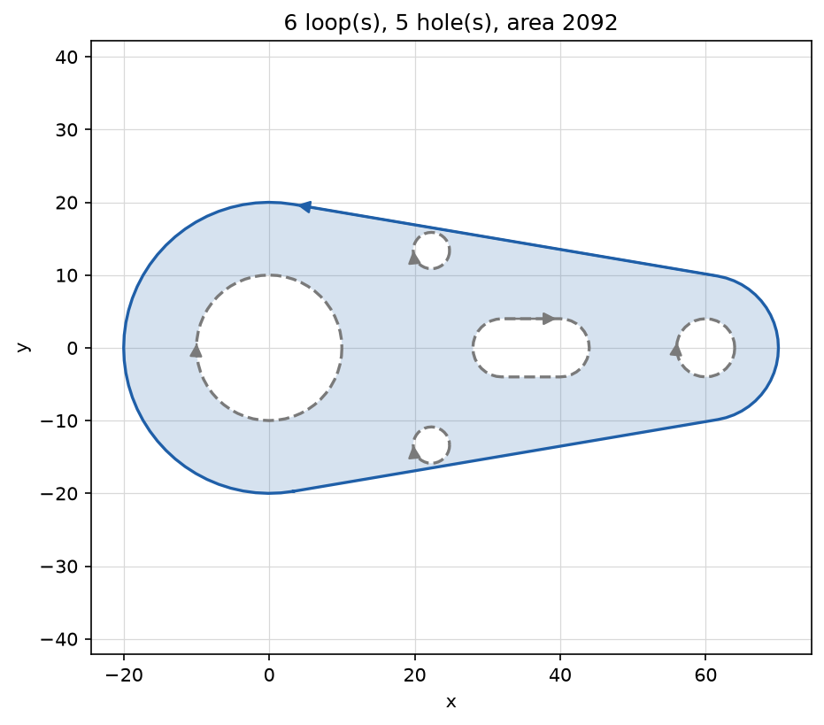
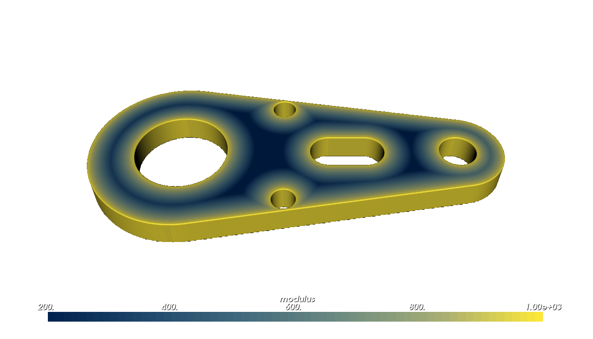
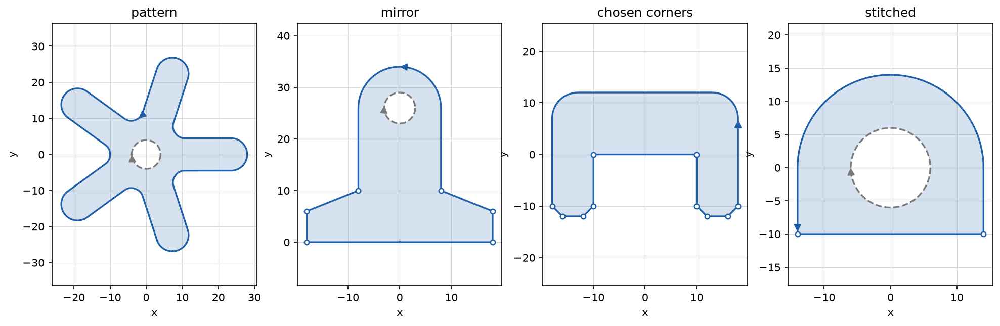
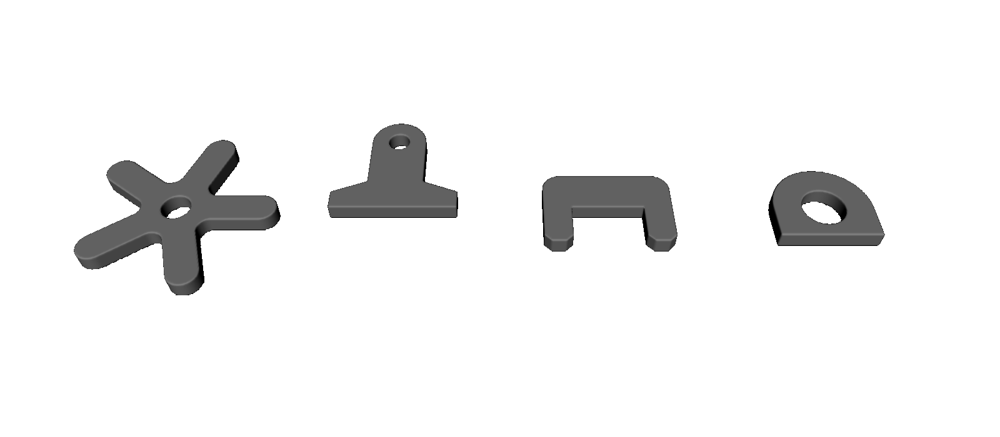
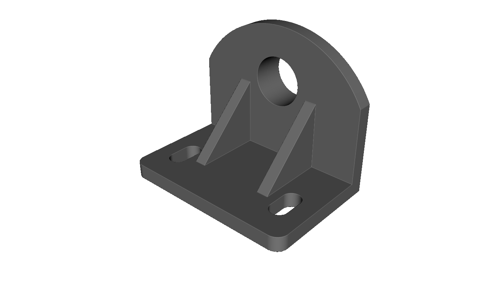
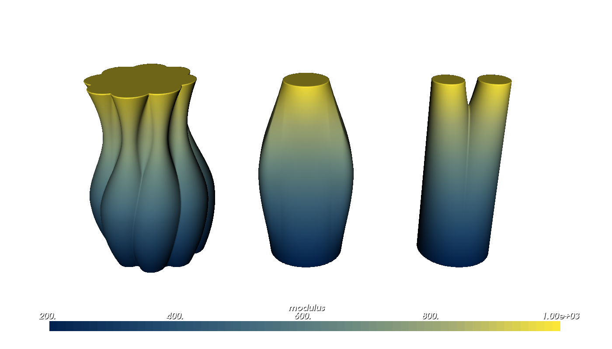
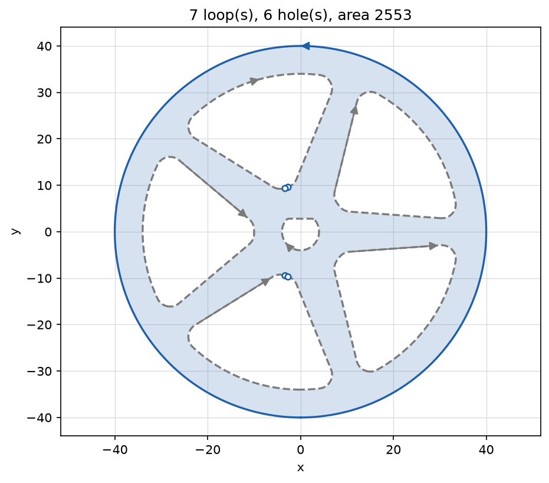
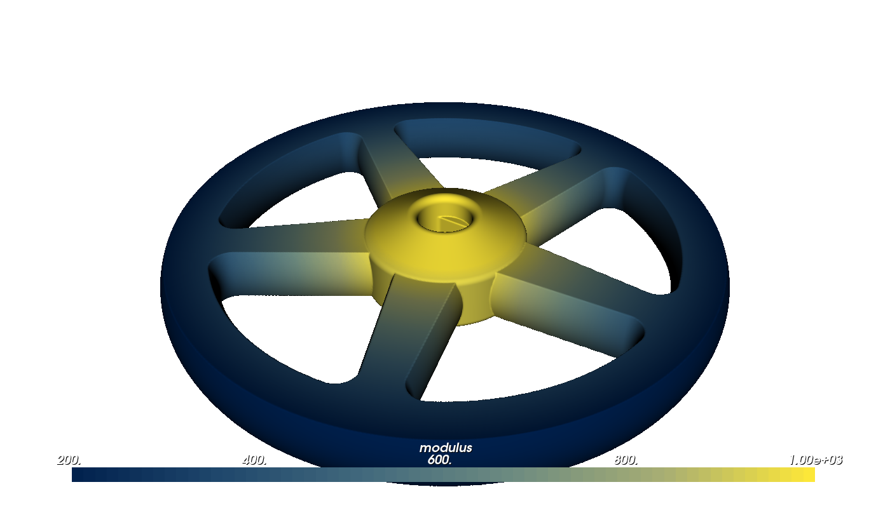

Sketching and Extruding#
Traditional CAD tools build most parts the same way: draw a 2D sketch on a plane, then pull it into 3D. OpenVCAD supports that workflow, with one difference: the sketch is Python. Variables, loops, if statements and functions take the place of a constraint solver, so a design is a script that you can rerun with new numbers. This guide shows how to draw sketches, build them from construction geometry, edit them, place them on any plane, and shape the walls of the solids you extrude from them. You can check every sketch in 2D with viz.plot_profile() before turning it into a part.
What You Will Learn#
Draw sketches with a pen-style
pv.Sketch: lines, arcs, tangent arcs, fillets, chamfers and holes.Use construction geometry (intersections and tangents) to place features the way CAD dimensions do.
Edit profiles: patterns, mirrors, chosen-corner fillets, chamfers, rounding, and stitching loose curves.
Check sketches in 2D with
viz.plot_profile().Sketch on any plane with
pv.Plane, for extrusions and revolves.Shape walls along the height with an offset law, and loft between different sections.
Prerequisites#
This guide assumes you have completed the Getting Started Guide and the Functional Grading Guide. It builds on Curves, Profiles and Sweeps, which introduces pv.Profile, pv.Extrude and pv.Revolve; read its Lessons 2 and 4 first.
Running the Examples#
All scripts for this guide are in examples/sketching/:
cd examples/sketching
python 01_sketch_basics.py
Scripts that call viz.plot_profile() open a 2D plot first; close it to continue to the 3D preview that viz.Render(...) opens. Lessons 1, 2, 5 and 6 attach a modulus (stiffness) attribute: select modulus from the Attribute list at the top of the render window to see it.
Lesson 1: Drawing a Sketch#
pv.Sketch works like a pen. You start it at a point, and every drawing method adds a piece from the pen’s position and moves the pen to the end of that piece. Because each piece starts exactly where the last one ended, a sketch never has gaps. The methods are:
Method |
Draws |
|---|---|
|
a line to a point |
|
a line by an offset, such as |
|
a line of a length in a direction (degrees from +X) |
|
an arc of a radius to a point |
|
an arc through a point to another |
|
an arc to a point that continues the last piece without a kink |
|
an arc that continues the last piece and turns by an angle (positive turns left) |
|
free-form curves |
|
a line back to the start, if needed, finishing the loop |
Every drawing method takes fillet= or chamfer=, which rounds or cuts the corner at the end of that piece; close(fillet=...) treats the corner where the loop closes. The sketch keeps track of the pen’s direction (s.direction), which is what the tangent arcs continue.
move_to(x, y) starts a new loop. A loop drawn inside another becomes a hole. s.profile() turns the closed loops into a pv.Profile, which combines with other profiles using |, & and -.
Before you build a solid, check the sketch with viz.plot_profile(profile). It shades the material, draws holes as dashed grey lines, puts an arrowhead on each loop to show its direction, and marks the corners with open circles. The title gives the number of loops and holes and the area.
import pyvcad as pv
import pyvcad_rendering as viz
# Dimensions drive the sketch: change one and the whole outline follows.
length = 60.0
height = 12.0
tab_width = 20.0
corner_radius = 4.0
# The outline is drawn like a pen moving from point to point. fillet= and chamfer= treat the corner
# at the end of that piece; tangent_arc_to() continues the last piece without a kink, so the tab gets
# a half-round top.
s = pv.Sketch((0, 0))
s.line_to(length, 0, chamfer=3)
s.line_to(length, height + 8)
s.tangent_arc_to(length - tab_width, height + 8)
s.line_to(length - tab_width, height, fillet=3)
s.line_to(0, height, fillet=2)
s.close(fillet=corner_radius)
# A loop drawn inside the outline becomes a hole: two arcs make the round hole in the tab.
tab_center = (length - tab_width / 2, height + 8)
s.move_to(tab_center[0] - 4, tab_center[1])
s.arc_through((tab_center[0], tab_center[1] + 4), (tab_center[0] + 4, tab_center[1]))
s.arc_through((tab_center[0], tab_center[1] - 4), (tab_center[0] - 4, tab_center[1]))
s.close()
# Plain Python places features: a row of mounting holes.
plate = s.profile()
for i in range(3):
plate = plate - pv.Profile.circle(2.0, center=(8 + 10 * i, height / 2))
# Check the sketch before building anything: holes are dashed, arrows show each loop's direction,
# and circles mark the corners.
viz.plot_profile(plate)
# Then turn it into a part, graded from soft at the left end to stiff at the tab.
part = pv.Extrude(plate, 4.0)
part.set_attribute(pv.DefaultAttributes.MODULUS, part.coordinate_field("u").map_range(0.0, length, 200.0, 1000.0))
viz.Render(part)
viz.plot_profile(plate)

Render (modulus)

The only corners left in the plot are the ends of the chamfer: every other corner was filleted, and the tangent arc joins its neighbours without a corner at all.
Lesson 2: Construction Geometry#
In a CAD sketcher you would make a line tangent to two circles, or place a hole by its distance from two others, and let the solver find the coordinates. In a script, each of those is one function call that returns the points:
Function |
Returns |
|---|---|
|
where the line through |
|
where a line crosses a circle, in order along the line |
|
where two circles cross; the point to the left of |
|
where lines from a point touch a circle |
|
the lines touching two circles: outer ones first, then inner ones |
|
the corner between two curves, rounded or cut |
Every function returns all of its solutions in a stated order, as NumPy arrays, so you pick the one you want by position. Lines are infinite lines through two points; circles are a centre and a radius. When a sketch needs arcs as curves rather than pen moves, pv.ArcCurve.through(start, middle, end), pv.ArcCurve.from_ends(start, end, radius, counter_clockwise, large) and pv.ArcCurve.from_tangent(start, direction, end) build them the same ways.
The example draws a link plate around two bosses. The sides are the outer tangents of the two boss circles, and two holes are placed 26 mm from one boss and 40 mm from the other: the hole centres are where circles of those radii cross.
import pyvcad as pv
import pyvcad_rendering as viz
# A link plate around two bosses. In a CAD sketcher you would make the sides tangent to both bosses
# and dimension the holes; here each of those is one function call.
big_center, big_radius = (0.0, 0.0), 20.0
small_center, small_radius = (60.0, 0.0), 10.0
# The outer tangent lines of the two boss circles: the upper one first, then the lower one.
(upper_big, upper_small), (lower_big, lower_small) = pv.tangent_lines(big_center, big_radius, small_center, small_radius)[:2]
# Draw the outline counter-clockwise: along the lower tangent, around the small boss, back along the
# upper tangent and around the big boss. Each arc passes through the boss's far point.
s = pv.Sketch(lower_big)
s.line_to(*lower_small)
s.arc_through((small_center[0] + small_radius, 0.0), upper_small)
s.line_to(*upper_big)
s.arc_through((big_center[0] - big_radius, 0.0), lower_big)
s.close()
link = s.profile()
# Bores in the bosses.
link = link - pv.Profile.circle(10.0, center=big_center) - pv.Profile.circle(4.0, center=small_center)
# Two holes placed by distances, like dimensions in a CAD sketch: 26 from the big boss's centre and
# 40 from the small one's. The two circles of those radii meet at the hole centres.
for hole in pv.intersect_circles(big_center, 26.0, small_center, 40.0):
link = link - pv.Profile.circle(2.5, center=hole)
# A lightening slot between the bosses.
link = link - pv.Profile.slot(16.0, 8.0, center=(36.0, 0.0))
viz.plot_profile(link)
# Stiffer near the edges, softer inside: the extrusion's profile_distance is the distance to the outline.
part = pv.Extrude(link, 6.0)
part.set_attribute(pv.DefaultAttributes.MODULUS,
part.coordinate_field("profile_distance").map_range(-6.0, 0.0, 200.0, 1000.0, clamp=True))
viz.Render(part)
viz.plot_profile(link)

Render (modulus)

Change small_radius or move small_center and the tangent sides and the dimensioned holes follow, just as they would in a constrained CAD sketch.
Lesson 3: Editing Profiles#
A finished profile can be moved, copied and reshaped. Each method returns a new profile and keeps arcs exact:
Method |
Does |
|---|---|
|
moves, turns or scales the profile |
|
reflects it across a line; the default is the Y axis |
|
lists the corner points, as an (N, 2) NumPy array |
|
rounds corners with exact tangent arcs, between lines, arcs or both |
|
cuts corners with a straight edge, |
|
rounds every outside or inside corner, of any curve |
|
chains loose curves, in any order and direction, into loops |
fillet() and chamfer() treat every corner by default. Pass at= a list of points to treat only the corners nearest them, which you usually pick from corners() with ordinary Python, for example [c for c in p.corners() if c[1] > 0] for the top corners. A radius too large for the neighbouring edges is reduced so neighbouring fillets do not overlap.
round_convex() and round_concave() shrink and regrow the profile (or grow and shrink it), so they round corners between any curves, including splines, and webs where shapes meet. With round_convex(), features thinner than twice the radius disappear; with round_concave(), gaps narrower than that close.
The example builds four profiles: a rotor patterned with a loop and webbed with round_concave(), a clip drawn as one half and mirrored, a bracket with filleted top corners and chamfered bottom corners, and an arch stitched from loose pieces. viz.plot_profile() can draw into any matplotlib axes, so all four are checked side by side.
import matplotlib.pyplot as plt
import pyvcad as pv
import pyvcad_rendering as viz
# 1. Patterns: copies of one lobe turned around a hub with an ordinary loop, then webbed together.
# round_concave() fills every inside corner, whatever curves meet there.
lobes = 5
lobe = pv.Profile.slot(30.0, 9.0, center=(13.0, 0.0))
rotor = pv.Profile.circle(10.0)
for i in range(lobes):
rotor = rotor | lobe.rotated(360.0 * i / lobes)
rotor = rotor.round_concave(3.0) - pv.Profile.circle(4.0)
# 2. Mirror: sketch half of a symmetric part and reflect it across the Y axis.
# The quarter arc ends level at the mirror line, so the two halves join smoothly.
half = pv.Sketch((0, 0)).line_to(18, 0).line_to(18, 6).line_to(8, 10).line_to(8, 26).arc_to(0, 34, 8.0).close()
clip = (half.profile() | half.profile().mirrored()) - pv.Profile.circle(3.0, center=(0, 26))
# 3. Pick corners with Python: fillet the top corners of a bracket and chamfer the bottom ones.
bracket = pv.Profile.rectangle(36, 24) - pv.Profile.rectangle(20, 12, center=(0, -6))
top = [c for c in bracket.corners() if c[1] > 0]
bottom = [c for c in bracket.corners() if c[1] <= -12]
bracket = bracket.fillet(5.0, at=top).chamfer(2.0, at=bottom)
# 4. Stitch loose pieces, like an imported drawing whose curves come in any order and direction.
pieces = [
pv.ArcCurve((0, 0, 0), 14.0, 0.0, 180.0),
pv.LineSegment((14, -10), (14, 0)),
pv.LineSegment((-14, -10), (14, -10)),
pv.LineSegment((-14, 0), (-14, -10)),
]
arch = pv.Profile.from_curves(pieces) - pv.Profile.circle(6.0, center=(0, 0))
# Check all four side by side: plot_profile() draws into any matplotlib axes.
fig, axes = plt.subplots(1, 4, figsize=(16, 4.5))
for ax, profile, name in zip(axes, [rotor, clip, bracket, arch], ["pattern", "mirror", "chosen corners", "stitched"]):
viz.plot_profile(profile, ax=ax, show=False, title=name)
plt.show()
parts = [pv.Translate(60.0 * i, 0, 0, pv.Extrude(p, 5.0)) for i, p in enumerate([rotor, clip, bracket, arch])]
root = pv.Union(parts)
viz.Render(root)
viz.plot_profile() on four axes

Render

plot_profile() marks only corners that turn by more than 5 degrees (corner_angle=). The offsets behind round_concave() can come back as fine polygons, which turn slightly at every vertex, and those would otherwise crowd the plot. corners(min_angle=...) filters the same way.
Lesson 4: Sketching on Planes#
Every profile is drawn in its own 2D coordinates. A pv.Plane says where those coordinates sit in the world: an origin, and axes for the profile’s x and y. Its normal points out of the plane.
Plane |
Profile x |
Profile y |
Normal |
|---|---|---|---|
|
+X |
+Y |
+Z |
|
+X |
+Z |
-Y |
|
+Y |
+Z |
+X |
|
|
normal × x |
|
plane.offset(distance) moves a plane along its normal and plane.rotated(degrees, axis, center) turns it.
pv.Extrude(profile, height, plane=...)extrudes along the plane’s normal. A negative height goes the other way, andsymmetric=Truecentres the solid on the plane. The default plane isPlane.xy().pv.Revolve(profile, angle, plane=...)spins the profile about the plane’s y axis, through its origin, so the profile’s x is the radius. The default isPlane.xz(), which keeps the familiar behaviour: the axis is +Z and the profile’s y is the height. A partial revolve starts in the sketch plane.pv.Loft(Lesson 5) takes a plane the same way.
Placing a profile with a plane is rigid, so it keeps distances exact, and you no longer need pv.Rotate and pv.Translate to stand a sketch up. The example builds an angle bracket from sketches on several planes: a slotted base on XY, an upright on XZ, two gussets on YZ planes, and a boss revolved about the upright’s hole on a custom plane.
import pyvcad as pv
import pyvcad_rendering as viz
# An angle bracket built from sketches on several planes, like features in a CAD part tree.
width = 60.0
depth = 40.0
thickness = 5.0
# Base plate on the XY plane, extruded up along +Z, with two bolt slots.
base_profile = pv.Profile.rounded_rectangle(width, depth, 4.0, center=(0.0, depth / 2))
for x in (-21.0, 21.0):
base_profile = base_profile - pv.Profile.slot(12.0, 6.0, center=(x, 26.0), angle=90.0)
base = pv.Extrude(base_profile, thickness)
# Upright on the XZ plane: the profile's x is world X and its y is world Z. Plane.xz() faces -Y, so a
# negative height extrudes toward +Y, back over the base.
upright_sketch = pv.Sketch((-width / 2, 0))
upright_sketch.line_to(width / 2, 0).line_to(width / 2, 30).arc_through((0, 48), (-width / 2, 30)).close()
upright_profile = upright_sketch.profile() - pv.Profile.circle(8.0, center=(0.0, 30.0))
upright = pv.Extrude(upright_profile, -thickness, plane=pv.Plane.xz())
# Gussets on YZ planes at x = -13 and x = 13, between the slots and clear of the hole (profile x is
# world Y, y is world Z), extruded symmetrically so each is centred on its plane.
gusset_profile = pv.Profile.polygon([(thickness, thickness), (thickness + 22, thickness), (thickness, thickness + 22)])
gussets = [pv.Extrude(gusset_profile, 4.0, symmetric=True, plane=pv.Plane.yz(x)) for x in (-13.0, 13.0)]
# A boss around the upright's hole, revolved about the hole's axis. Revolve spins a profile about its
# plane's y axis, so this plane sits at the hole centre with normal +Z and x along -X, which makes its
# y axis (normal x x_axis) point along -Y, out of the front face. The profile's x is the radius.
boss_plane = pv.Plane((0.0, 0.0, 30.0), normal=(0, 0, 1), x_direction=(-1, 0, 0))
boss = pv.Revolve(pv.Profile.rectangle(4.0, 6.0, center=(10.0, 3.0)), plane=boss_plane)
root = pv.Union([base, upright, *gussets, boss])
viz.Render(root)
Render (seen from behind)

The boss is on the far side of the upright in this view, around the hole.
Lesson 5: Shaping Walls and Lofting#
A plain extrusion has straight walls. Two tools shape them along the height.
Offset law. pv.Extrude(..., offset_law=[(f, w), ...]) grows the section by w (shrinks it for negative w) at fraction f of the way from the profile plane to the far end (from bottom to top for a symmetric=True extrusion). The points are joined smoothly without overshooting them, and the walls hold the end values beyond them. It adds to draft= and works with twist=, so a bulge, a waist or a flared lip is a few numbers. If the walls would meet, the constructor raises an error saying where.
Loft. pv.Loft(sections, heights, smooth=True, plane=None) places a profile at each height and blends between them. It blends the sections’ distance fields rather than matching points on their outlines, so the sections can differ in shape and even in topology: a circle can become a rounded rectangle, and one disc can split into two. smooth=True passes smoothly through every section; smooth=False blends straight from each section to the next. The blended shape stays inside the union of its two neighbouring sections, so it never bulges past them. A loft has the coordinate fields u, v, height, normalized_height and profile_distance, like an extrusion.
import pyvcad as pv
import pyvcad_rendering as viz
# 1. An offset law shapes the walls along the height: (fraction of the height, outward offset) points,
# joined smoothly. Here a fluted vase swells, pinches at the neck and flares at the lip, and twists.
flutes = 8
flute = pv.Profile.circle(4.0, center=(11.0, 0.0))
section = pv.Profile.circle(12.0)
for i in range(flutes):
section = section | flute.rotated(360.0 * i / flutes)
vase = pv.Extrude(section.round_concave(1.5), 60.0, twist=45.0, offset_law=[(0.0, 0.0), (0.35, 5.0), (0.75, -1.5), (1.0, 2.0)])
vase.set_attribute(pv.DefaultAttributes.MODULUS,
vase.coordinate_field("normalized_height").map_range(0.0, 1.0, 200.0, 1000.0))
# 2. A loft blends between sections at chosen heights: here a round duct becomes a rounded rectangle
# and then a smaller circle.
duct = pv.Loft([pv.Profile.circle(12.0), pv.Profile.rounded_rectangle(30.0, 18.0, 4.0), pv.Profile.circle(7.0)],
[0.0, 30.0, 60.0])
duct.set_attribute(pv.DefaultAttributes.MODULUS,
duct.coordinate_field("normalized_height").map_range(0.0, 1.0, 200.0, 1000.0))
# 3. Sections may differ in topology: one disc splits into two legs. smooth=False blends linearly
# between neighbouring sections (the default passes smoothly through every section).
legs = pv.Profile.circle(5.0, center=(-7.0, 0.0)) | pv.Profile.circle(5.0, center=(7.0, 0.0))
split = pv.Loft([pv.Profile.circle(12.0), legs], [0.0, 60.0], smooth=False)
split.set_attribute(pv.DefaultAttributes.MODULUS,
split.coordinate_field("normalized_height").map_range(0.0, 1.0, 200.0, 1000.0))
root = pv.Union([pv.Translate(-50, 0, 0, vase), duct, pv.Translate(50, 0, 0, split)])
viz.Render(root)
Render (modulus)

Lesson 6: A Parametric Part#
The last example puts the pieces together in a spoked wheel. Every feature comes from a handful of numbers, so changing spokes from 5 to 7, or wrapping the script in a function and calling it in a loop, gives a family of wheels. One spoke is sketched with a tangent-arc end and patterned with a loop; round_concave() webs the spokes into the rim and hub. The keyed bore is a boolean of a circle and a rectangle, filleted where the flat meets the arc. An offset law crowns every edge of the wheel by 1 mm at mid-thickness. The hub is revolved from a half-section and the bore is cut through everything last. The material is graded from a stiff hub to a softer rim, using the revolve’s u coordinate (distance from the axis), which, like every coordinate field, is defined everywhere in space.
import pyvcad as pv
import pyvcad_rendering as viz
# A parametric spoked wheel: every feature comes from these numbers, so a loop or an if statement is
# all it takes to make a family of wheels.
spokes = 5
rim_radius = 40.0
rim_width = 6.0
hub_radius = 10.0
bore_radius = 4.0
spoke_root = 9.0 # spoke width at the hub
spoke_tip = 5.0 # spoke width at the rim
thickness = 8.0
# One spoke, sketched along +X: tapered sides joined by a tangent arc at the hub end.
inner = hub_radius - 2.0
outer = rim_radius - rim_width + 2.0
spoke = pv.Sketch((inner, -spoke_root / 2))
spoke.line_to(outer, -spoke_tip / 2).line_to(outer, spoke_tip / 2).line_to(inner, spoke_root / 2)
spoke.tangent_arc_to(inner, -spoke_root / 2)
spoke = spoke.close().profile()
# The rim and hub, the spokes turned around the axis, and webs where they meet.
wheel = (pv.Profile.circle(rim_radius) - pv.Profile.circle(rim_radius - rim_width)) | pv.Profile.circle(hub_radius)
for i in range(spokes):
wheel = wheel | spoke.rotated(360.0 * i / spokes)
wheel = wheel.round_concave(3.0)
# A keyed bore: a circle with a flat, made from a boolean and filleted where the flat meets the arc.
bore = (pv.Profile.circle(bore_radius) & pv.Profile.rectangle(2 * bore_radius, 1.7 * bore_radius, center=(0.0, -0.15 * bore_radius)))
viz.plot_profile(wheel - bore.fillet(0.8))
# A crowned wheel: the offset law pushes every edge of the section out by 1 mm at mid-thickness.
part = pv.Extrude(wheel, thickness, symmetric=True, offset_law=[(0.0, 0.0), (0.5, 1.0), (1.0, 0.0)])
# A hub boss revolved from a half-section on the XZ plane (x is the radius, y the height).
boss_section = pv.Profile.polygon([(bore_radius, -thickness), (hub_radius + 2.0, -thickness / 2),
(hub_radius + 2.0, thickness / 2), (bore_radius, thickness)])
hub = pv.Revolve(boss_section.round_convex(1.0))
# Grade both from a stiff hub to a softer rim. The revolve's "u" coordinate is the distance from the
# axis, and like every coordinate field it is defined everywhere, so the spokes can use it too.
radial = hub.coordinate_field("u").map_range(hub_radius, rim_radius, 1000.0, 200.0, clamp=True)
part.set_attribute(pv.DefaultAttributes.MODULUS, radial)
hub.set_attribute(pv.DefaultAttributes.MODULUS, radial)
# Cut the keyed bore through everything last, so the crown cannot close it.
root = pv.Difference(pv.Union(part, hub), pv.Extrude(bore.fillet(0.8), 3 * thickness, symmetric=True))
viz.Render(root)
viz.plot_profile()

Render (modulus)

Advanced Notes#
Checks on construction. Mistakes are caught when you build a profile or solid, with a message saying where:
loops that cross themselves or each other (combine overlapping shapes with
|instead);curves in a chain or sketch that do not meet;
a draft or offset law that shrinks the section to nothing;
a sweep whose section would fold over itself inside a bend.
Where fillets and chamfers apply. fillet(), chamfer(), fillet_curves() and the fillet= and chamfer= sketch options work at corners between straight edges and circular arcs. Corners next to a Bezier curve or spline are left as they are; use round_convex() or round_concave() there.
Accuracy. round_convex() and round_concave() are exact when the offsets behind them are (profiles of straight edges and arcs, usually); otherwise they are polygons within the offset tolerance (0.001 mm, or 1e-4 of the profile size if smaller). An extrusion with an offset law, like one with draft or twist, and every loft, report approximate distance accuracy: the surface is in the right place, but the value away from it is not a true distance. That matters for pv.Offset, pv.Shell and blends that read distances away from the surface (see the distance accuracy table in Curves, Profiles and Sweeps).
Curves too. Every curve has translated(), rotated(), scaled(), mirrored() and transformed(matrix), so a sweep path can be patterned the same way as a profile. s.curves() (or s.curve() for one path) returns a sketch’s paths, open or closed, with their fillets applied; an open sketch path makes a good pv.Sweep or pv.Tube path.
When you need a constraint solver. If a part is easier to describe by constraints than by construction (many mutually dependent dimensions, or a sketch on the face of an existing B-rep solid), build it in CadQuery and bring it in with pv.CADModel.from_cadquery(); see Authoring CAD with CadQuery.
See Also#
Python API: Curves and Profiles and leaf nodes
Curves, Profiles and Sweeps for curves, profiles, tubes, sweeps and coordinate fields
Offsets, Blends and Arrays for offsets, blended booleans and arrays of finished parts
Authoring CAD with CadQuery for constraint-based sketches in a B-rep kernel